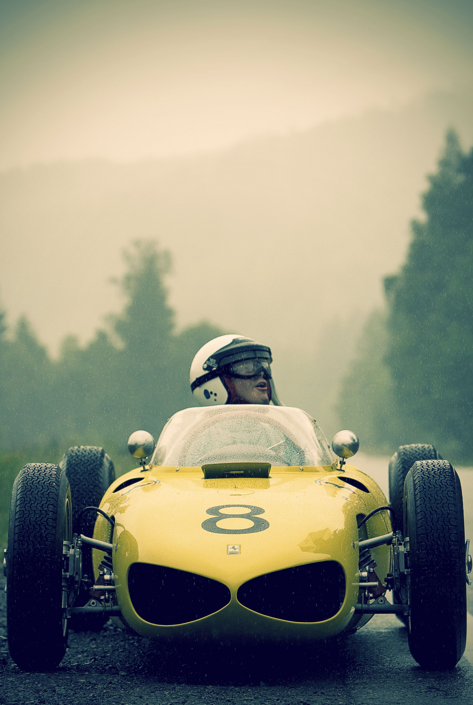
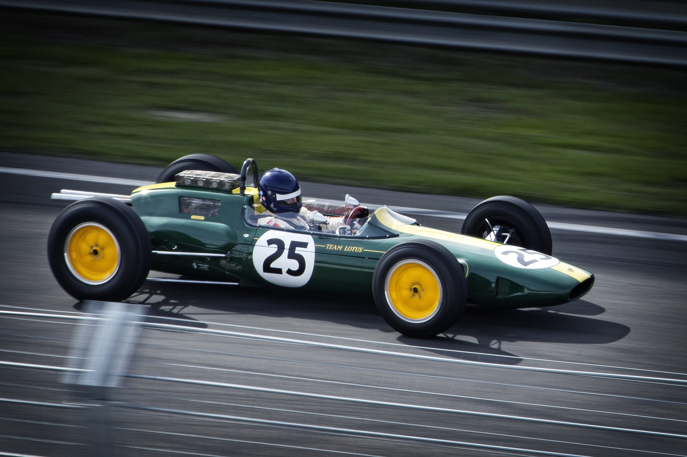
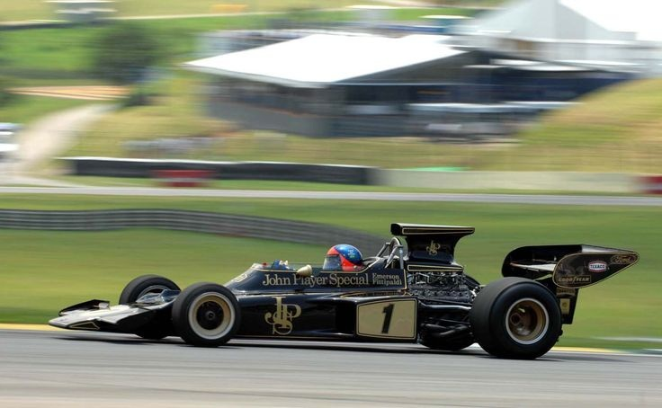
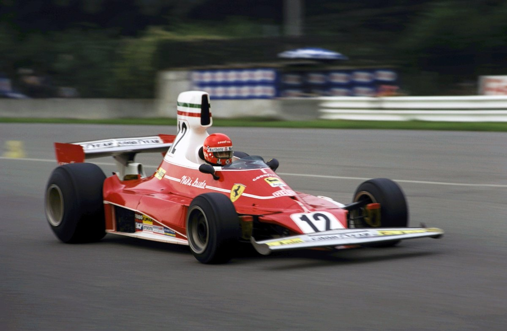
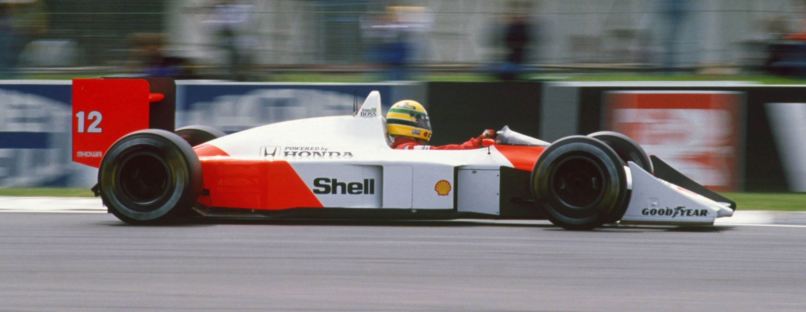
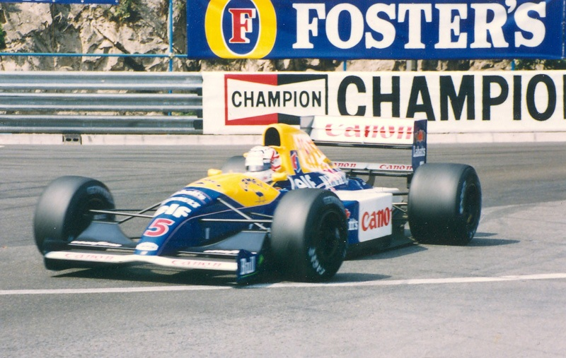
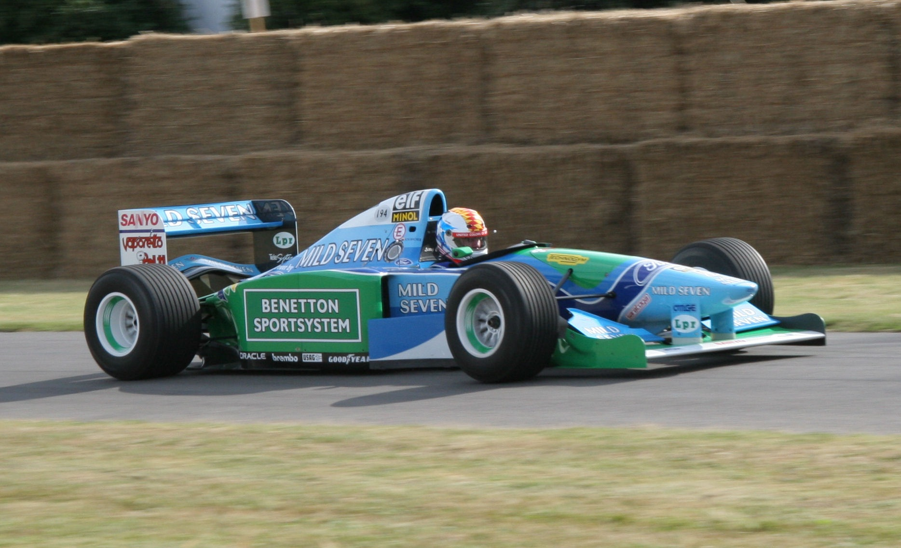
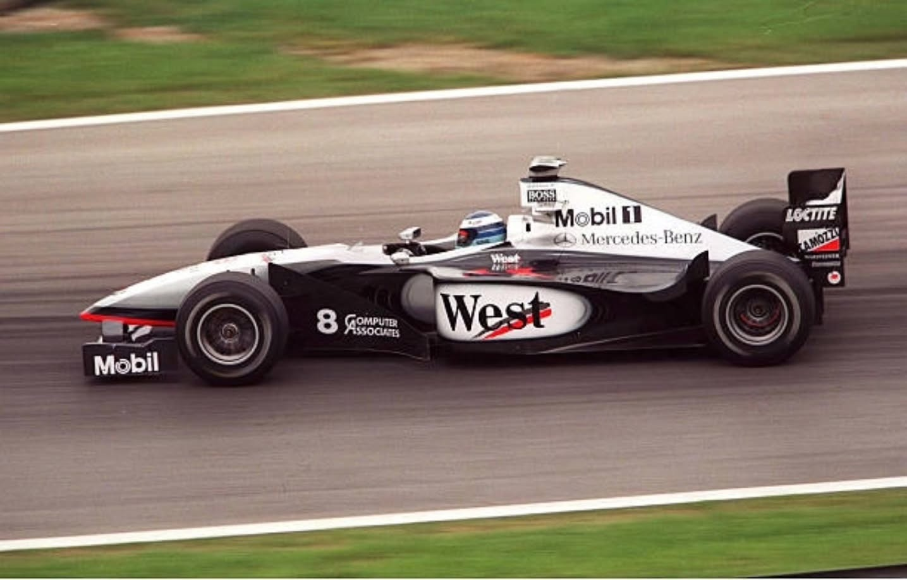
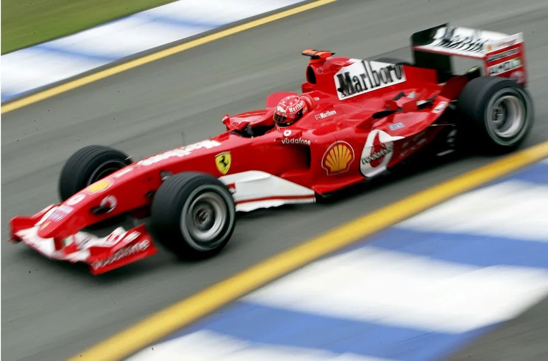
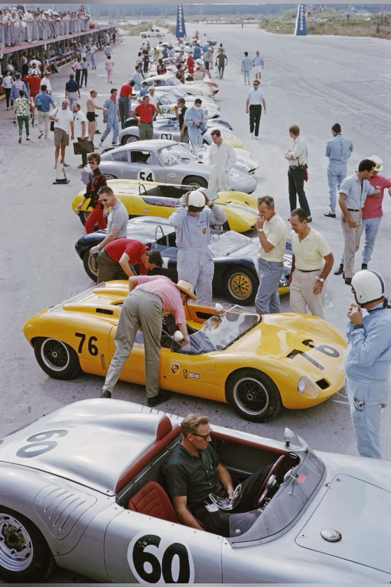

De 1962 aos anos 2000, as máquinas que mudaram a Fórmula 1. Oito delas, uma por vez.

A revolução do monocoque

O carro mais bonito já feito?

O renascimento da Ferrari

A perfeição absoluta

Tecnologia alienígena

O primeiro título de Schumacher

A flecha de prata

Dominação total

Faltou algum nessa lista? Deixa nos comentários e marca aquele amigo que sabe de cor o ano de cada carro.
Memorabilia dessas eras, garimpada no Japão, aparece toda semana no nosso grupo.
link na bio · @nipponspeedco